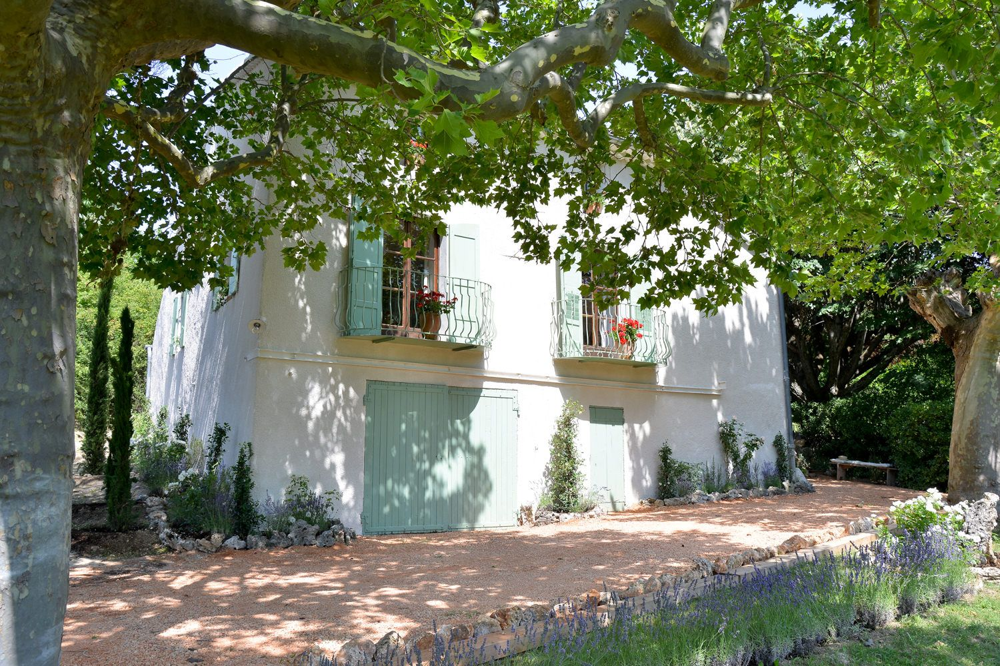

Наша история
Mas des Lavandes – это бывшая ферма XVIII века, которую наша семья бережно восстановила, сохранив её душу и характер.
Мы находимся в самом сердце региона Люберон, среди виноградников, оливковых рощ и, конечно же, знаменитых лавандовых полей.
Наша цель – предложить вам не просто проживание, а полное погружение в атмосферу южной Франции: неторопливый ритм жизни, местная кухня, приготовленная из продуктов с соседнего рынка, и ощущение, что вы вернулись в дом, которого не знали, но по которому тосковали.
Мы лично встречаем каждого гостя и всегда готовы подсказать лучшие маршруты для прогулок, скрытые от туристов деревушки и самые живописные точки для фотосъемки.
Добро пожаловать в наш дом!
– Семья Бланшар